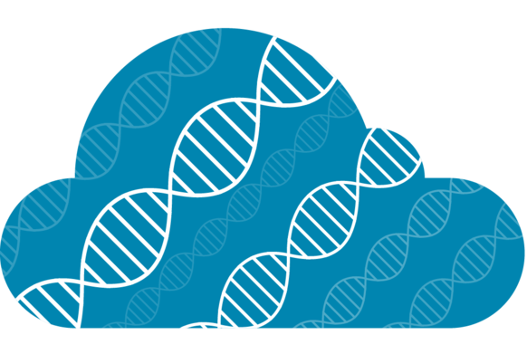

FAIR at Cloud-SPAN
Previously we shared some information about FAIR data, and explained why it’s important to make sure your data is as reusable as possible.
The FAIR principles aren’t just for data. Our aim is to apply the principles to all our training resources to ensure that they can be reused and remixed by others for their own teaching purposes. Here’s a look at how we’re doing it:
Findable
Remember, findability is about making it easy to find your data or resource. We’ve added metadata to our resources, which enables us to register our courses with TeSS, a life sciences training repository. The metadata means people can search and filter to find our course based on what they need. You can see the metadata for our Prenomics course at the top of the source page here.
In addition, we have also registered our training resources on Zenodo, another repository which assigns a DOI to each stored item. This persistent identifier will give our resources a permanent home, even after other links become deprecated.
Accessible
To be accessible it needs to be easy to retrieve a resource without any special tools. It should also be clear how to do this. We’ve made this really easy for ourselves by hosting our courses online for free on a dedicated set of webpages via GitHub Pages.
Interoperable
Interoperability means ensuring that computers can understand and open a resource. We do this by providing data for analysis in de facto file standards such as FASTQ and using Markdown (a widely-used and platform-independent text formatting language for writing resources) for course material.
We also help computers to understand how our resources fit into a bigger picture by using an ‘ontology’ to describe the topics of our courses. This forms part of the metadata and helps people to filter and understand what our resources are about. For example, we use the EDAM ontology of bioscientific data analysis and data management. We’ve labelled our Prenomics course as falling under topics 3372 (software engineering) and 0622 (genomics).
Reusable
All of the things just described help promote reusability. In particular, we promote reusability by tagging our resources with rich metadata - we use the Bioschemas Training Material protocol which suggests a list of metadata properties for biosciences training materials.
We also help people reuse our materials by applying a Creative Commons Attribution (CC-BY) licence, which means anyone can distribute, remix, adapt or build on our work as long as they credit us. We include details of this licence in our metadata, in our GitHub repositories and at the bottom of our course pages so it’s clear to everyone what the rules are.
Over to you!
What steps are you taking to make your data and other digital resources as FAIR as possible? There are some great resources available online to help you if you’re not sure where to start - try howtofair.dk or the FAIR Cookbook for helpful articles, videos and step-by-step guides!
